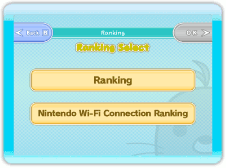
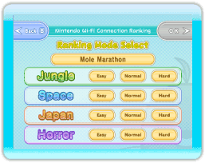
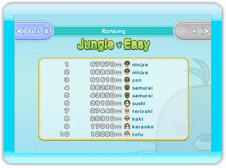
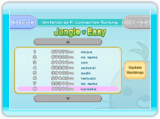
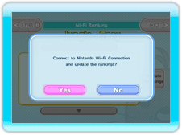

Select Ranking
Choose the ranking you want to see.
Ranking
The score ranking for players on your Wii console.
Nintendo Wi-Fi Connection Ranking
Use Nintendo Wi-Fi Connection to view the score rankings for the entire country.

Ranking Mode Select Screen
Select the mode, stage, and difficulty level you want to see the ranking for.

Ranking Screen
Ranking
Display a list of the top ten scores. Your own score is highlighted in the list.

Nintendo Wi-Fi Connection Ranking
Display a list of the top 30 scores, as well as the ones around your own score. Press the ▲ and ▼ buttons to scroll the list up and down.

Update Rankings
（Nintendo Wi-Fi Connection Ranking Only）
Select "Update Rankings", then press the "Yes" button to connect to Nintendo Wi-Fi Connection and update the score rankings. If you have any scores that haven't been sent to Nintendo Wi-Fi Connection Ranking, you'll have a chance to do so here.
Select "No" to cancel the ranking update.